Quill
A small word processor for DOS, Windows 3.1 and Windows 95, 98 and Me, written in Rust around one shared core.
Experimental The DOS and Windows 95 builds edit and save documents today. The Windows 3.1 build is still being brought up.
No downloads yet. Release floppies are planned; until then you can build Quill from source.
-
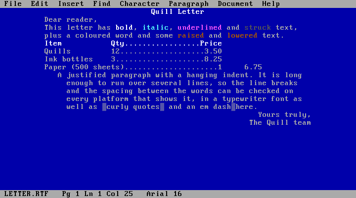
DOS, in DOSBox-X -
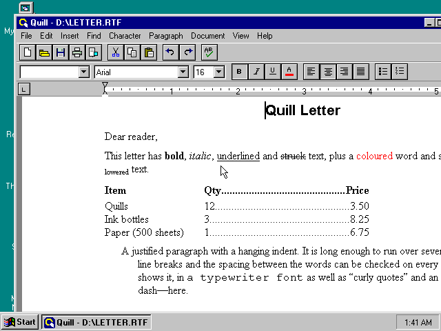
Windows 95, test bed -
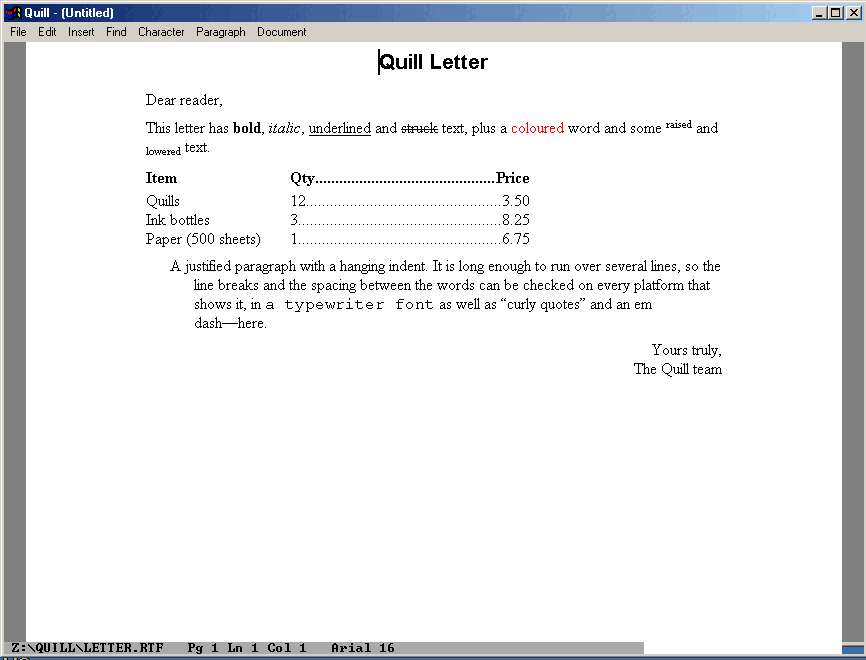
Windows Me, VirtualBox
letter.rtf, opened by the DOS build and by the Windows build on Windows 95 and Windows Me.What Quill is
A word processor for the PCs of the 1990s
Quill gives you fonts and sizes, bold and italic and the rest of that family, text colour, tab stops with dot leaders, lists, headers and footers with page numbers, find and replace, and a spelling checker that knows Canadian English. It saves its own .QLD files and RTF, and LibreOffice opens the RTF it writes.
It comes as separate programs for separate machines. QUILLDOS.EXE runs on DOS in text mode. QUILL32.EXE runs on Windows 95, 98 and Me. QUILL.EXE is the Windows 3.1 build, and it doesn't edit anything yet. They share one Rust core, so a document saved on DOS opens on Windows 95 unchanged, and the other way round.
It is small on purpose. As built today, QUILLDOS.EXE is 192 KB with its DPMI host inside, and QUILL32.EXE is 322 KB. Both fit on one 1.44 MB floppy alongside the 300 KB Canadian English dictionary.
Architecture
One core, three machines
Everything that decides what a document is and how it looks lives in one set of portable Rust crates. Each machine gets a thin shell that turns its keys into commands and draws what the core lays out.
The portable core
no_std Rust with no heap allocator, no floating point and no panics. Nothing in it names DOS or Windows.
quill-coredocument, editing, undo, layoutquill-formats.QLD, RTF, textquill-imageBMP, PNGquill-inflatedeflatequill-spellspellingquill-appcommands, menus, dialogsquill-gridtext screens
Shells plug in through traits: Store for memory, Measure for font widths, Files for the disk.
-
DOS text mode
QUILLDOS.EXE · go32
A 32-bit protected-mode program with CWSDPMI inside the executable. It copies the core's character grid to VGA text memory.
Works
-
Windows 3.1
QUILL.EXE · NE
16-bit code from Rust's
code16target, packed into a Windows 3.x executable with several 64 KB code segments. It opens a document on Windows for Workgroups 3.11, then stops with a General Protection Fault that isn't fixed yet.In progress
-
Windows 95, 98 and Me
QUILL32.EXE · PE
Windows 9x's own Win32, ANSI calls only, compiled for a Pentium. It draws the page with GDI fonts and uses the system's menus and dialogs.
Works
Layout uses integers only, so the same document and the same font widths give the same lines on every machine. The font widths Windows Me reported were captured and replayed on the host, and the host broke the letter into the same lines Windows Me did.
Screenshots
Captured from Quill, running
Every picture here is a capture of Quill itself, and each caption says where it ran. None come from real hardware yet. Select a screenshot to see it full size; the arrow keys step through a group.
DOS text mode
-
The test letter in text mode. Bold shows as bright white, italic as cyan, underline as magenta, and the price list keeps its dot leaders. Code page 437 has no curly quotes, so they show as shaded blocks. QUILLDOS.EXE LETTER.RTF in DOSBox-X -
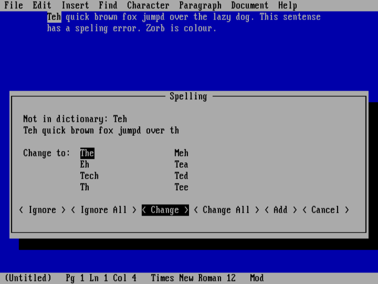
F7 on a paragraph typed with planted mistakes. For “Teh” the Spelling box offers eight suggestions, closest first. QUILLDOS.EXE in DOSBox Staging, keys typed by its AUTOTYPE command


Windows 3.1
The Windows 3.1 editor doesn't run yet, so these come from a small test program that shows Quill's icon. They are here because getting an icon right on a 16-colour display is a real part of the job.
-
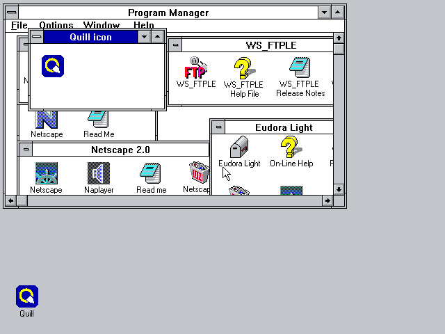
Quill's 16-colour icon on Windows for Workgroups 3.11, in a window and minimised on the desktop. ICONTEST.EXE in DOSBox-X, VGA at 640 × 480 -
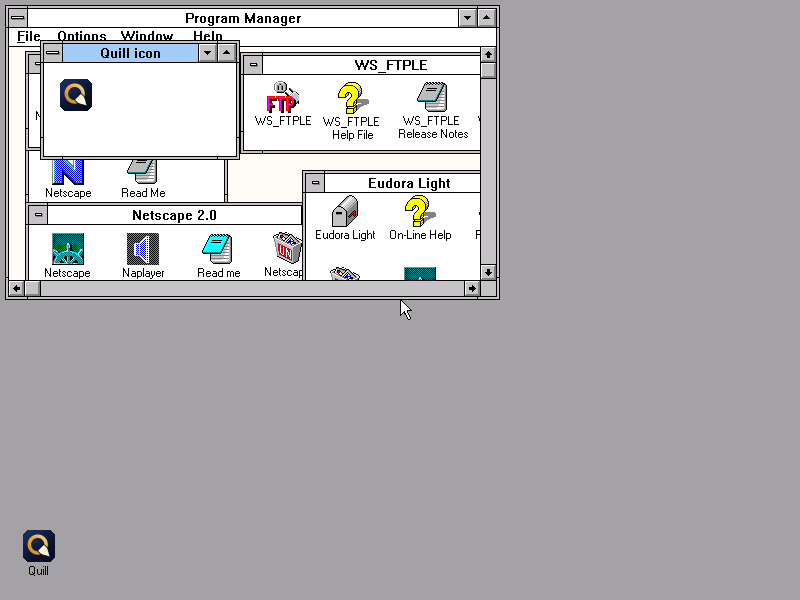
The 256-colour icon on a 64K-colour display, where Windows 3.11 draws its gradients. A 256-colour display only gives it the 20 system colours. ICONT256.EXE in DOSBox-X, S3 Trio at 800 × 600


Windows 95 and Me
-
The letter on Windows 95, in fonts from Windows itself. At 640 × 480 the window is wider than the screen, and the justified paragraph isn't spread to the margin yet. QUILL32.EXE on the Windows 95 test bed (OSR2.5 in DOSBox-X) -
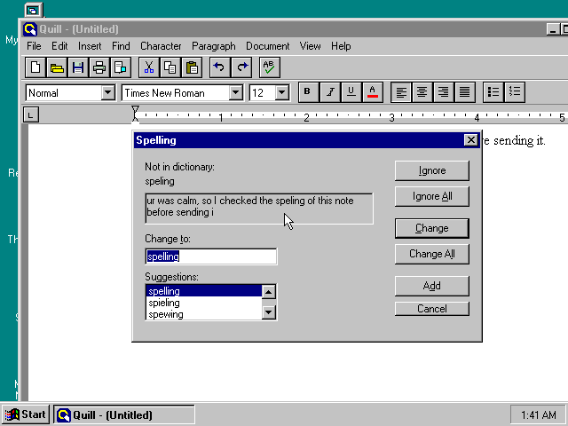
Spelling on Windows 95 with the Canadian dictionary beside the program. It let “harbour” through and stopped at “speling”. QUILL32.EXE on the Windows 95 test bed -
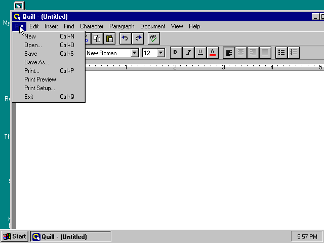
The File menu, opened with the mouse. QUILL32.EXE on the Windows 95 test bed -
The same page on Windows Me, drawn with GDI fonts under the native menu bar. QUILL32.EXE on a Windows Me guest in VirtualBox -
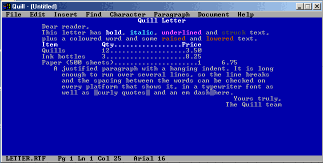
The Windows build can also draw the DOS text screen in a window, from the code DOS uses. On Windows Me all 35 screens of a test script matched the host's. QUILL32.EXE on a Windows Me guest in VirtualBox -
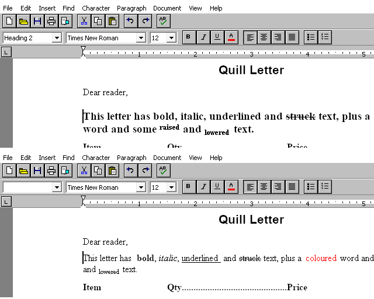
The style box applies one of eight built-in paragraph presets. Above, Heading 2; below, the same paragraph after one Undo. QUILL32.EXE under Wine -
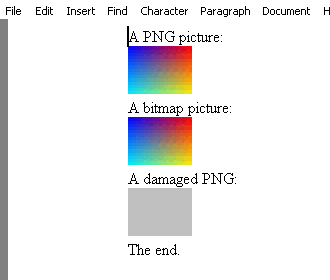
Pictures in a document: a PNG, the same gradient as a BMP, and a damaged PNG that fails its checksum and shows as a grey box. QUILL32.EXE under Wine


Windows 95 dialogs and toolbar
Windows 95 draws all of these itself, from Quill's dialog resources and its own common dialogs, at 640 × 480 in 16 colours. The two toolbar rows and the ruler are behind each one.
-
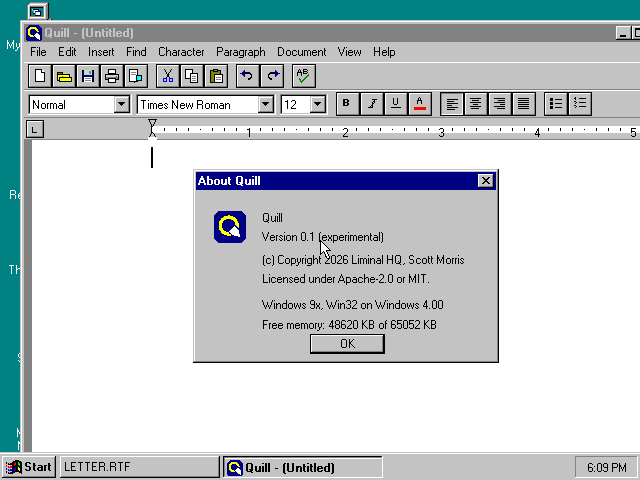
About Quill, with the version, licence, platform and free memory. QUILL32.EXE on the Windows 95 test bed -
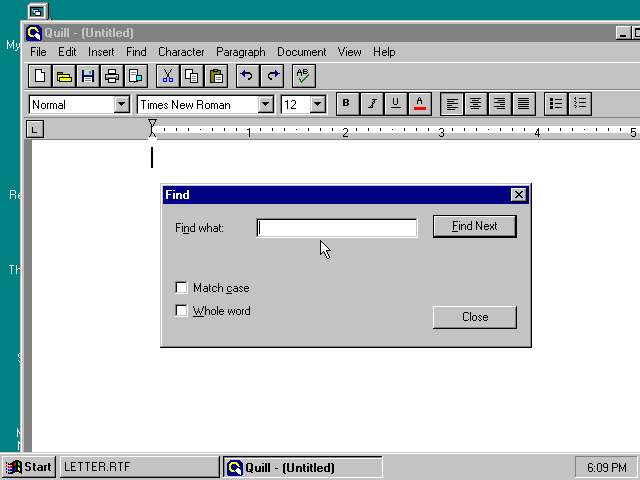
Find, with Match case and Whole word. QUILL32.EXE on the Windows 95 test bed -
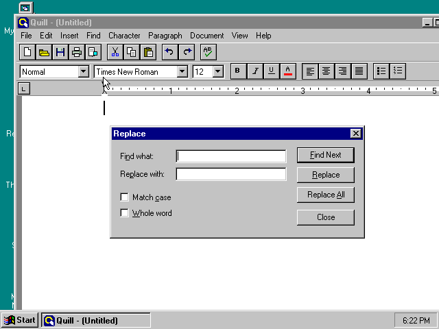
Replace adds a second field and two buttons to the same dialog. QUILL32.EXE on the Windows 95 test bed -
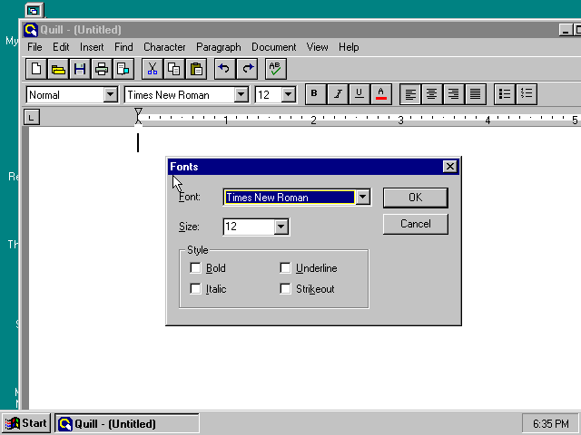
Fonts lists the TrueType faces installed on the machine. QUILL32.EXE on the Windows 95 test bed -
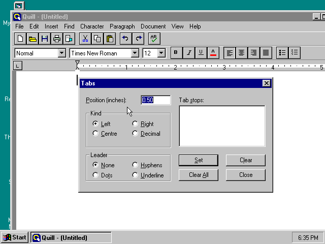
Tabs: position, kind and leader, spelled “Centre”. QUILL32.EXE on the Windows 95 test bed -
Open uses the system's file dialog, filtered to Quill documents. QUILL32.EXE on the Windows 95 test bed -
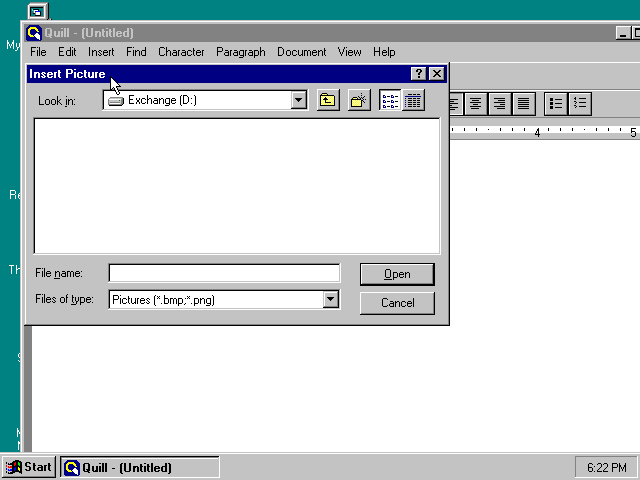
Insert Picture, filtered to BMP and PNG. QUILL32.EXE on the Windows 95 test bed -
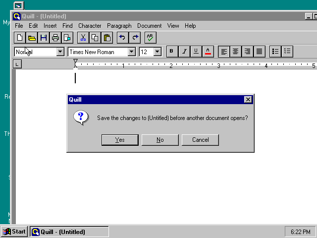
The unsaved-changes question, as a standard message box. QUILL32.EXE on the Windows 95 test bed


Features
What works today
This list stops at what has been built and checked. Each card names the builds it was checked on, and says so where the only check ran under Wine. None of it runs on Windows 3.1 yet.
-
Character formats
Fonts and sizes, bold, italic, underline, strikethrough, superscript, subscript and text colour. DOS shows them as screen colours; Windows draws the real fonts.
DOS Windows 9x
-
Paragraphs
Left, centred, right and justified alignment, indents and line spacing. On Windows, justified lines aren't spread to the margin yet, and a style box offers eight built-in presets.
DOS Windows 9x, no justification
-
Tab stops
Left, centre, right and decimal stops with dot, hyphen or underline leaders, from the Tabs dialog or, on Windows, a click on the ruler.
DOS Windows 9x
-
Lists
Bulleted and numbered lists, with levels you raise and lower from the Paragraph menu.
DOS Windows 9x
-
Headers and footers
With page number, page count, date and file name fields, shown in print and, on Windows, in Print Preview.
DOS Windows 9x, Wine only
-
Find and replace
Match case and whole word, with Replace All. Windows uses real dialogs; DOS draws its own in text.
DOS Windows 9x
-
Undo, redo and overtype
Multi-level undo and redo, for typing and formatting alike. The Insert key switches to overtype.
DOS Windows 9x
-
Spelling
F7 checks from the caret, with Ignore, Ignore All, Change, Change All and Add. Canadian English by default; American and British dictionaries are built too, chosen in
QUILL.INIfor now.DOS Windows 9x
-
Files
Quill's own
.QLD, RTF and plain text. The RTF is checked by opening it in LibreOffice and comparing the text and the count of each kind of formatting with the original.DOS Windows 9x
-
Pictures
BMP and PNG pictures inside documents and RTF, drawn in the Windows page at their shown size. DOS keeps them and shows a placeholder box.
DOS, placeholder Windows 9x, Wine only
-
Printing
Windows prints through the system Print dialog and has Print Preview, checked under Wine by rendering its PostScript with Ghostscript. DOS prints plain text, headers and footers included, to a printer port or a file.
DOS Windows 9x, Wine only
-
Toolbar, ruler and status bar
Two toolbar rows sized for a 640 × 480 screen, a ruler with draggable indent markers, and a status bar. Each one can be hidden, and Quill remembers which.
Windows 9x
Planned, or in progress
- The Windows 3.1 editor (in progress)
- Help: Quill's own WinHelp compiler is in progress, and there is no help file yet
- The mouse in the text and a scroll bar on Windows; the mouse on DOS
- Spelling as you type, and an Options page to pick the dictionary
- A DOS graphics mode with real fonts
- Printing pictures
- Dragging tab stops on the ruler, and toolbar tooltips
- Release floppies, one per platform, each with an installer
- JPEG pictures, if a small enough decoder fits
Platforms and requirements
What each build needs, and where it has run
Every run so far has been in an emulator, under Wine or in a virtual machine. Nothing has run on real hardware yet.
| Build | Needs | Has run on | Not yet |
|---|---|---|---|
DOSQUILLDOS.EXE |
MS-DOS 5 or later on a 486 or later, a VGA and 4 MB of memory. DPMI comes from CWSDPMI, which is built into the executable, so there's nothing else to install. |
|
Real hardware; the 4 MB memory run in DOSBox-X |
Windows 95, 98 and MeQUILL32.EXE |
Windows 95, 98 or Me on a Pentium or later. Quill uses no MMX or SSE, and a scan of the executable checks for them. |
|
Windows 98; printing on Windows Me; real hardware |
Windows 3.1QUILL.EXE |
Windows 3.1 or 3.11 in 386 Enhanced mode, on a 386 or later. 4 MB is the design target. |
|
A working editor; Wine, whose 16-bit support wasn't installed; real hardware |
Windows 95 on a 486 is meant to use the Windows 3.1 build once it works, because the Windows 95 build needs a Pentium. Neither Windows build needs Win32s or any other add-on.
For the curious
How it's built
The portable crates are no_std Rust with no allocator, no floating point and no panics. Document-sized data lives in a Store of chunks no bigger than 32 KB, which is what lets the same code run with 16-bit Windows' 64 KB segments and with DOS's flat memory.
Tests run on the host first. Property tests drive the piece table and its undo against a plain String model, with chunks small enough that edits keep crossing their edges. Golden screens hold the DOS build to the host: it runs in headless DOSBox, writes out every screen it shows, and each character and colour must match the host's run of the same keys. The same key scripts play into the Windows build under Wine.
There's no C compiler anywhere. The DOS program is a Rust ELF file rewrapped as a go32 executable behind CWSDPMI's stub, on a foundation copied from Desk. The Windows 95 build links with rust-lld for a Pentium, and its imports are checked against an allowlist of ANSI functions. The Windows 3.1 build uses the code16 target and the NE packer from rust-win16. Quill taught that packer to spread code over several 64 KB segments, and that change is on its way back to rust-win16.
Release disks will carry their files in a compressed pack. Quill has a provisional format of its own for that, and the plan is to switch to the Liminal Pack format the Liminal Installer is building, so one reader serves both.
Build it yourself
There are no releases yet. Until the floppies exist, you can build both working programs from the repository. These are the commands, as run on Linux with rustup (the repository pins the Rust version) and Python 3:
git clone https://github.com/liminal-hq-labs/quill.git
cd quill
cargo test --workspace # the portable core, on the host
bash win9x/build.sh # win9x/dist/QUILL32.EXE
bash dos/tools/fetch-tools.sh # CWSDPMI and DOSBox Staging, checked by SHA-256
bash dos/build.sh # dos/dist/QUILLDOS.EXECopy QUILL32.EXE to a Windows 95, 98 or Me machine, or run it under Wine. QUILLDOS.EXE runs in DOSBox or DOSBox-X. For spelling, put EN_CA.DIC beside the program; cargo run -p quill-dict -- OUTDIR builds it.
Questions
Plain answers
Why a word processor for old machines?
A word processor needs a bit of everything those machines offer: the keyboard, the screen, fonts, files, the printer and not much memory. If one Rust core can handle all of that on DOS, Windows 3.1 and Windows 95, the approach should carry other programs too.
It's also the worked example for the Cross-compiling to the past series, which explains the toolchains Quill is built with.
Is it finished?
No. Quill is a Liminal HQ Labs experiment, so file formats and behaviour can change between any two commits. The DOS and Windows 95 builds edit, save, check spelling and print. The Windows 3.1 build doesn't run the editor yet, there's no help file, and there's no release.
Which file formats does it read and write?
Quill's own .QLD, RTF and plain text. The DOS and Windows 95 builds write the same bytes as the host does for the same document, and the tests compare them. Pictures in RTF are kept as PNG or BMP, and LibreOffice shows them in both the original file and Quill's rewrite of it.
There's no .DOC support, and Windows Write's .WRI is on the list for later.
Does it need any Microsoft files?
No. Quill ships no Microsoft files and needs nothing beyond the Windows you run it on. The DOS build carries CWSDPMI, a free DPMI host, inside its executable. The spelling dictionaries are built from the SCOWL word lists, and their notice travels in each dictionary file.
The Windows 3.11, 95 and Me installations used for testing stay on the author's machines and are never published.
Can I help?
Yes. Issues and pull requests are welcome on GitHub. The house rules are in AGENTS.md, and running Quill on a real 486 or Pentium would answer a question nobody has answered yet.